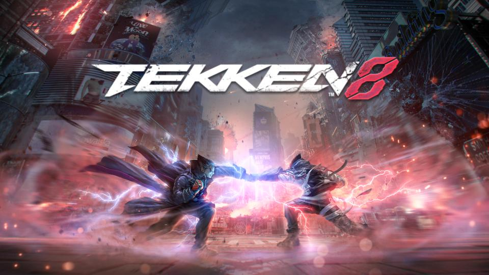

Date: 2024-01-26
Title: Tekken 8
Summary: The next generation of Tekken with new mechanics, improved graphics, and story continuation.
Categories: Fighting, Modern
Type: Game Files
File Size: ~80 GB
Format: Digital / Disc
Region: Global
Platform: PC / PS5 / Xbox Series X
Tekken 8 continues the legendary fighting series with a brand new engine, enhanced character models, and a more aggressive combat system. The story follows the conflict between Jin Kazama and Kazuya Mishima, pushing the narrative forward with cinematic storytelling and intense battles.
Tekken 8 is a modern game designed for current-generation platforms, so it doesn’t have an ISO copy like older titles used to. Instead of relying on emulators or modified files, it is officially distributed through digital stores and physical releases for platforms like PlayStation 5, Xbox Series X/S, and PC. This means you can play it easily without needing an emulator or a jailbroken console. Everything is optimized to run smoothly on supported systems, making the experience much more accessible and straightforward compared to older Tekken games. Because of that, it’s much better to buy the game and support the developers. By purchasing Tekken 8, you’re helping the series continue to grow and improve. If you’re a real Tekken fan, supporting the game means supporting the community and the future of the franchise—we’re Tekken.